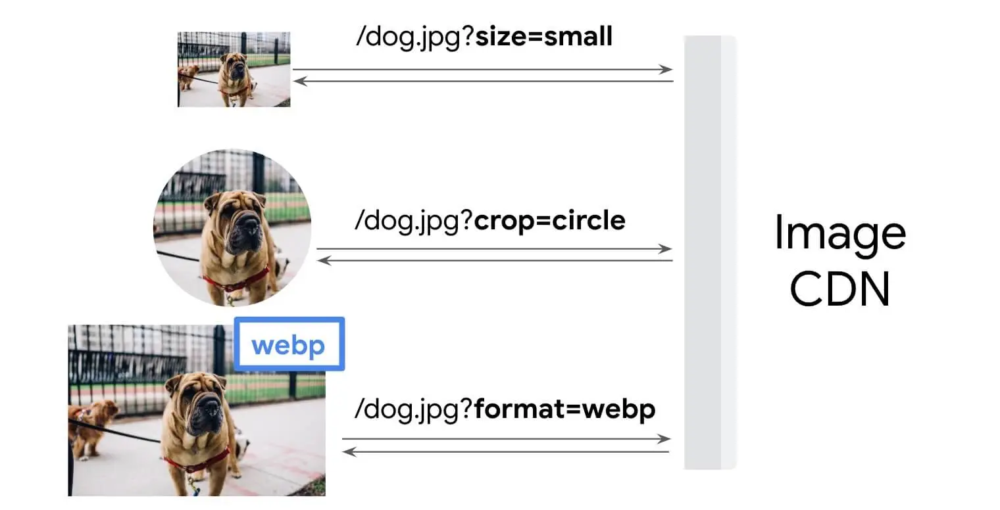

Short answer
An image CDN builds a variant from parameters, but each useful variant still needs one stable URL.
The flow diagram shows a client asking for a size and a format and receiving that variant. That is useful when the parameters are chosen by the template on purpose. It is a duplicate-URL problem when every page view adds a random cache-buster or a one-pixel-different width. SEO Health looks at the pattern of URLs, not at the vendor’s logo.
Definition
A CDN hostname is not a canonical strategy. If the same photograph is published at dozens of parameter combinations, the site has many URLs for one asset. Browsers may cache poorly, and a crawler may see the page referencing a new URL every time. The health note lists the parameter pattern and one sample page. It does not claim the CDN brand improves rankings.
What belongs in the page basics
Use a small, intentional set of widths and formats, and do not append unique parameters per view.
The HTML should still carry alt text and a reserved box. The CDN does not write those. A signed URL that changes every hour is especially hostile to caching and to any system trying to compare page versions. If signatures are required, the page that references them should be understood as uncacheable on purpose, and the audit should say so.

What to check
- A short ladder of widths rather than one URL per pixel
- No per-view random parameters
- Alt text and a reserved box still in the HTML
- Signed URLs labeled if they must change
- One gallery URL as the sample
A practical example
A product gallery asks the CDN for the photo at the exact CSS pixel width of each visitor, so 731, 732, and 733 pixel files all exist. The template should request a short ladder of widths. The health sample is one gallery URL and the parameter pattern, not a ranking claim about the CDN.
What this does not claim
An image CDN does not guarantee rankings or citations.
Where Mika Visibility files this
Mika Visibility files titles, headings, language, and media basics under SEO Health content and structure checks. They help a page be understood. They are not SEO Growth, which asks what coverage is still missing, and they are not a guarantee that an answer product will cite the page.
The flow diagram shows parameters selecting a variant so the article can warn against accidental unique URLs.
FAQ
What does an image CDN change about the URL?
An image CDN builds a variant from parameters, but each useful variant still needs one stable URL.
What parameter habit should the template avoid?
Use a small, intentional set of widths and formats, and do not append unique parameters per view.
Does an image CDN guarantee rankings?
An image CDN does not guarantee rankings or citations.
Next step
Run a structured SEO + GEO audit to see health findings, growth gaps, and a blueprint you can act on.
Clearer entities, answers, evidence, and context make pages easier to understand and reference. Results in any answer product are not guaranteed.